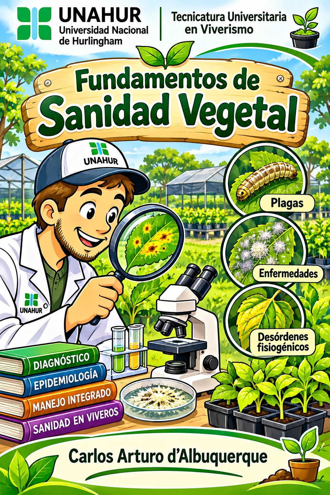

UNAHUR · VIVERISMO · GUÍA DE ESTUDIO 04
Observar, comprender y cuidarZOOLOGÍA 4
La vida en
el cultivo.
Explorá ciclos de vida, ambiente, plagas y enfermedades. Trece temas para estudiar, comparar y practicar en el orden de tu índice.

ANTES DE EMPEZAR
Un recorrido para entender el cultivo.
Del ciclo de vida al manejo integrado: relacioná organismos, ambiente y daños.
Se conservan los trece puntos del índice, incluidos los temas 8 y 10 que comparan ciclos y generaciones. Las láminas originales se mantienen; las aclaraciones verificadas se muestran por separado en las fichas 7 y 8.
01 / TU RECORRIDO DE ESTUDIO
Del 01 al 13, como en tu índice.
Elegí una ficha o avanzá paso a paso. Podés marcar las que ya repasaste.
02 / ENCONTRÁ LAS DIFERENCIAS
Una mirada, muchas pistas.
Buscá conceptos, especies y temas sin perder el orden del índice.
| Tema | Organismo o concepto | Idea central | Tipo | Descripción |
|---|
Los contenidos se basan en las láminas; las notas con fuente aclaran ejemplos que requieren contexto.
EXPLORÁ LOS CONCEPTOS
Ciclos no es lo mismo que generaciones.
Cambiá las cantidades y observá cómo se llama cada caso. Es un ejercicio de clasificación, no un pronóstico de campo.
03 / HACÉ MEMORIA
Leé la pregunta.
Recordá la idea.
Una tarjeta por tema, en el orden del índice. Intentá responder antes de darla vuelta.
04 / DESAFÍO DEL JARDÍN
Trece temas. Veintiséis desafíos.
Dos preguntas por tema, siguiendo el índice. Aprendé con cada explicación.
TU MATERIAL DE CONSULTA
Quince láminas para explorar.
Portada, índice y las trece páginas del módulo. Imágenes pequeñas, proporcionadas y con descripción. Tocá para ampliar.
ACLARACIONES PARA ESTUDIAR
Contrastá los ejemplos.
Las imágenes originales pueden contener simplificaciones. Las fichas y ejercicios incorporan estas precisiones:
- Mosaico del rosal: transmisión por propagación con material infectado; no se atribuye a pulgones. UC IPM.
- La carpocapsa puede tener varias generaciones según el clima. UC IPM.
- La roya del tallo tiene infecciones repetidas y no es un buen ejemplo de enfermedad monocíclica. American Phytopathological Society.